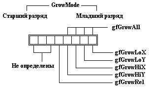

|
|
|
|
Поле GrowMode
Восьмиразрядное поле GrowMode определяет, как должен изменяться видимый элемент, когда его владелец (группа) изменяет свои размеры. Разряды этого поля показаны на рис. 17.9.

Puc. 17.9. Разряды поля GrowMode
Среда Turbo Vision позволяет изменять размеры окон с помощью мыши: для этого надо «схватить» мышью правый нижний угол окна. Флаги GrowMode определяют, как будут вести себя в этой ситуации вставленные в окно элементы. Напомню, что изображение встроенного элемента всегда отсекается границами группы. Стандартное состояние элементов среды Турбо Паскаль соответствует установленным флагам gfGrowHiX и gfGrowHiY.
gfGrowLoX
Если флаг установлен, левая граница видимого элемента всегда располагается на одинаковом расстоянии от правой границы группы-владельца. Таким образом, при уменьшении горизонтального размера окна вставленный в него видимый элемент смещается влево и, возможно, отсекается левой границей окна.
gfGrowLoY
Если флаг установлен, верхняя граница видимого элемента всегда располагается на одинаковом расстоянии от нижней границы группы, т.е. уменьшение вертикального размера окна приводит к смещению элемента вверх.
gfGrowHiX
Если флаг установлен, правая граница видимого элемента всегда располагается на одинаковом расстоянии от левой границы группы, т.е. при уменьшении горизонтального размера окна видимое на экране положение его внутреннего элемента остается неизменным и, возможно, отсекается правой границей окна.
gfGrowHiY
Если флаг установлен, нижняя граница видимого элемента всегда располагается на одинаковом расстоянии от верхней границы группы, т.е. при уменьшении вертикального размера окна видимое на экране положение его внутреннего элемента останется неизменным. Стандартное состояние элементов среды Турбо Паскаль соответствует установленным флагам gfGrowHiX и gfGrowHiY.
gfGrowAll
Если разряды gfGrowAll установлены в 1, видимый элемент передвигается в процессе изменения размеров своего владельца, отсекаясь его левой и верхней границами.
gfGrowRel
Если флаг установлен, видимый элемент пропорционально изменяет свои размеры при изменении размеров владельца. Вы должны использовать эту опцию только с TWindow, или с наследниками от TWindow, которые присоединяются к панели экрана. В этом случае окна сохраняют свои относительные размеры и положения на экране при переходе от 25 строк к 43/50 строкам и обратно. Этот флаг не предназначен для использования с видимыми элементами внутри окна.
|
|
|
|